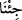

kelimelerini yazmak için demektir. Bunlar, Allah’ın hikmetleri, insanı hayrete sevkeden
acâiblikleridir. “Kelimeler,” bunların anlatımı ve ifadesidir.”
Ebu’l-Kâsım Fezârî, el-Es’iletü’l-mukhime’de der ki: “Rabbimin kelimeleri”
sözünün mânâsı nedir ki “kelimât” şeklinde çoğul olarak zikredilmiştir? Halbuki
Allah’ın kelimesi tek olup, bu da O’nun sıfatıdır. Bunun cevabı şöyledir: Bu, “Rabbimin
kelimelerinin mânâları” demektir. Bu mânâlar ise sonsuzdur. Çünkü kadîm sıfatlarla
ilgili olan şeyler sonsuzdur. Felsefeciler, Kur’an’da zikri geçen her kelimeyi ruh olarak
yorumlarlar ve ‘İnsan ruhu kadîmdir. O’ndan çıkmış O’na dönecektir.’ derler. Ben,
kelâm ilminde tahkîk ehli olduğunu iddia eden bazı muâsır müelliflerin bu koruluğun
etrafında dolaştıklarını, dikkatsizce bilgiçlik tasladıklarını gördüm. Bunu, bazen târiz
yoluyla, bazen açıkça söylerler. Sizi onlardan ve aldandıkları bu yanlış îtikadlardan
sakındırırım. Çünkü bu gibi sözler, eski felsefecilerin vardıkları yanlış kanaatlardır.
Bunlar da daha önce geçip gitmiştir. Ancak araştırma yaparken bazı bâtıl görüşler tekrar
avdet eder, defteri dürülmüşken tekrar revaç bulur. Dağılıp yok olmuşken tekrar dillere
dolanır.”
“Bir o kadar da ilâve getirsek dahi” yetmez. Yâni, mevcud denizlerin yüz mislini
getirsek bile, demektir. Kâşifî der ki: “Eğer okyanus gibi bir mislini getirsek, demektir.”
Böyle bile yapsak bu denizler de tükenirdi, fakat Allah’ın kelimeleri ise sonsuz olduğu
için tükenmezdi.
Şöyle de takdîr edilebilir: “Şâyet bunun bir mislini daha getirsek, Allah’ın kelimeleri
tükenmez.” Bu takdir: “Yeryüzünde bulunan ağaçlar kalem olsa, denizler de
mürekkep olsa, arkasından yedi deniz daha gelip ona yardım etse de Allah’ın
kelimeleri yazılsa yine bunlar tükenir, Allah’ın kelimeleri tükenmez.” (Lokman,
31/27) âyetine benzediği için daha uygundur. Çünkü açıkça gerçekten denizin tükenip
kelimelerin ise tükenmediğine delâlet etmektedir. Dolayısıyla çok söz söylemeye ihtiyaç
bırakmaz. Bahru’l-ulûm’da böyle geçmektedir.
el-İrşâd’da şöyle der: “__WORD__ (getirsek)” sözü, Allah Teâlâ tarafından bir kelâm olup:
“De ki” diye başlayan kelâma dahil değildir. Öncekinin mânâsını tahkik ve delâletini
tasdik için gelmiştir. Yâni, eğer biz, bir o kadarını daha yardımcı olarak getirsek, kudret
ve azametimizle bunların bir mislini yardımcı ve ziyâde olarak getirsek bile Allah
Teâlâ’nın kelimeleri tükenmeden deniz tükenirdi. Çünkü sonu olan her şey mutlaka sona
erer. Bilakis varlığı olan cisimlerin tamamı sonlu varlıklardır, bu aksi ispatlanamayacak
kadar kesin delillerle sâbit bir hakîkattir.”
İmam (Râzî) der ki: “Bizim: “Sonsuz olan şeyin hâdis olması muhaldir.” sözümüzle
“Allah Teâlâ, sonsuz makdûrâta (mümkinâtı yaratmaya) kâdirdir.” sözümüzün mânâsı
şudur: Allah Teâlâ’nın kudretinin sınırı yoktur. O, bu sınırdan sonra da eşyayı yine
yoktan var edebilir.” Yâni bundan mümkinâtın sonsuz olması gerekmez.
Şeyhim ve senedim (k.s) bir yazısında şöyle der: “Allah’ın ilminin ve hikmetinin
kelimeleri”nden murad, Allah’ın mâlumâtını ve onunla ilgili hikmetini ifade eden
kelimelerdir. Âyetteki “önce” kelimesi, denizlerin tükenmesinden mecazdır. Yoksa